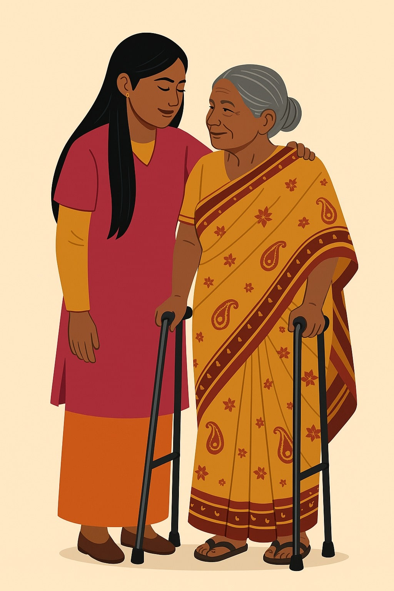

About Working at Shamrockseniors
Whether you're just starting your journey in healthcare or looking to take your career to the next level, Shamrockseniors offers rewarding opportunities in a supportive environment. With roles across Nursing, Allied Health, Social Care, General Support, and Administration, we are building a team of dedicated professionals who share our vision for excellence in care.
Who We’re Looking For
- Passionate newcomers open to training and development who believe in making a meaningful difference.
- Qualified caregivers, such as those with a NVQ Level 3 or 4 Certificate
- Experienced professionals with strong practical skills and a commitment to delivering outstanding care.
As a Shamrockseniors team member, you'll receive hands-on, fully paid training, mentoring from skilled professionals, and access to one of the most comprehensive development programmes in Sri Lanka’s homecare sector.
Join Our Team Benefits of Working With Us
Application & Contact
- Carer Roles: hr@shamrockseniors.com
- Admin/ICT/Patient Care: careers@shamrockseniors.com
- Nursing: cno@shamrockseniors.com
- Medical Officers & Consultants: dms@shamrockseniors.com
Contact Details
Shamrockseniors (PVT) LTDShamrock House, 43 First Lane,
Angulana Station Road,
Moratuwa 10400, Sri Lanka
Tel: +94 11 263 5210
View on Google Maps